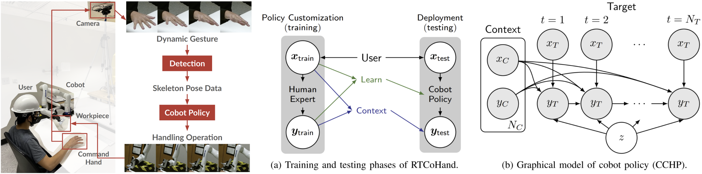

|
I am a Ph.D. student in the Robotics Institute at CMU, advised by Dr. Changliu Liu. I received my master's degree in Electrical & Computer Engineering and bachelor's degree in Computer Engineering from the University of Michigan, Ann Arbor. I also recieved a bachelor's degree in ECE from the Joint Institute at Shanghai Jiao Tong University. Email / CV / Google Scholar / Github |

|
|
|
I focus on applying optimization-based motion planning and machine learning algorithms to human-robot interaction and manufacturing. See the following list for my work, with the latest on top. |
|  |
Rui Chen, Alvin Shek, Changliu Liu Submitted to IEEE Transactions on Robotics, 2021 [arXiv] |

|
Rui Chen*, Peide Huang*, Laixi Shi* NeurIPS Workshop on Bayesian Deep Learning, 2021 [paper] |

|
Rui Chen, Mansur Arief, Weiyang Zhang, Ding Zhao IEEE Transactions on Intelligent Transportation Systems, 2021 [paper][arXiv] |

|
Xiaotong Chen, Rui Chen, Zhiqiang Sui, Zhefan Ye, Yanqi Liu, R. Iris Bahar, Odest Chadwicke Jenkins IEEE/RSJ International Conference on Intelligent Robots and Systems (IROS), 2019 [paper][arXiv][video] |

|
Rui Chen, Wenshuo Wang, Zirui Zhao, Ding Zhao arXiv, 2019 [arXiv] |